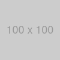
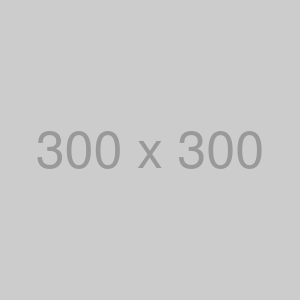
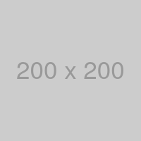

URL 正規化・重複除外テスト
Image Extractor の URL 正規化・重複除外を検証するページです。拡張を実行し、viewer
の件数と URL 一覧を確認してください。
全体の期待（重複除外後）
少なくとも次の 3 URL は残る（パスは絶対 URL に正規化される）:
・100x100.png（相対表記の違い・img / background の重複は 1 件）
・200x200.png?v=1 と 200x200.png?v=2（クエリ違いは別物）
・300x300.png
・400x400.png（srcset 最大候補）
余分な重複（同じ正規化 URL）は出ないこと。
① 同じ相対パスの <img> を複数

期待：100x100.png は 1 件
② 相対パスの書き方が違うが同じファイル
期待：①と合わせて 100x100.png は依然 1 件
③ <img> と background-image が同じ URL
期待：100x100.png は依然 1 件（抽出経路が違っても重複除外）
④ クエリが違う（仕様どおり別物）


期待：200x200.png?v=1 と 200x200.png?v=2 の 2 件（クエリ違いは別 URL）
⑤ 別画像（重複しない）

期待：300x300.png が 1 件追加
⑥ srcset の最大候補が別画像と一致しないこと

期待：最大 w の 400x400.png が 1 件。src の 200x200.png（クエリなし）も別途 1
件になり得るが、?v=1/?v=2 とは別物。
※現行ロジックは srcset があればそれを優先し src は使わないため、このセクションからは
400x400.png のみ追加される想定。
⑦ 前後空白付き URL（属性値）

期待：300x300.png は⑤と合わせて 1 件
まとめ（目安）
正規化・重複除外後のユニーク数の目安: 5 件
1. 100x100.png
2. 200x200.png?v=1
3. 200x200.png?v=2
4. 300x300.png
5. 400x400.png
（⑥で src も拾う実装に変わった場合はクエリなし 200x200.png が増えて 6 件）